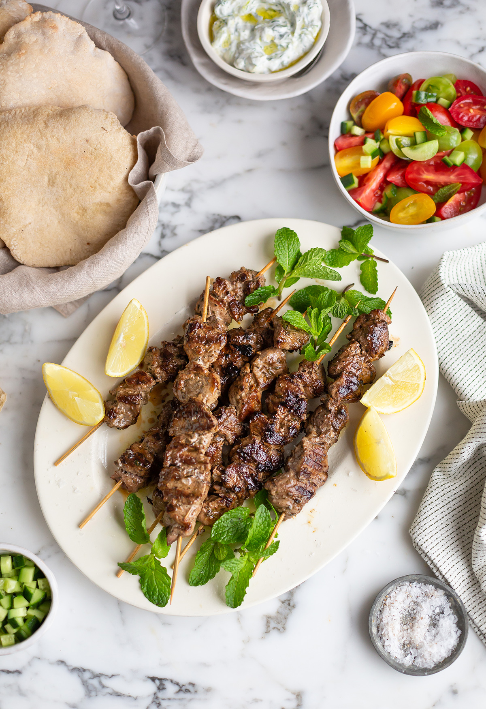

Lamb Souvlaki

Description
This delicious lamb souvlaki recipe features mouth watering marinated pieces of lamb, threaded on skewers, and char-grilled to a divine standard that would make Zeus' mouth water.
Side dishes of roasted potatoes, Greek salad and pita bread is must to make any Mediterranean connoisseur proud!
Ingredients
- one third cup olive oil
- one and one half tablespoons freshly squeezed lemon juice
- one and one half tablespoons red wine vinegar
- one and one half tablespoons chopped fresh oregano
- two cloves garlic, minced
- one half teaspoon salt
- one quarter teaspoon ground black pepper
- one and one half pounds boneless leg of lamb, trimmed of all fat and cut into 1-inch cubes
Steps
- Whisk olive oil, lemon juice, red wine vinegar, oregano, garlic, salt, and pepper together in a medium bowl. Add cubed lamb and stir until lamb is coated with marinade. Cover and refrigerate 3 hours, or overnight.
- Preheat an outdoor grill for medium-high heat and light oil the grate
- Thread marinated lamb onto skewers, reserving any remaining marinade. Grill skewers until desired doneness, 10 to 12 minutes, basting with the reserved marinade and turning occasionally for even cooking.